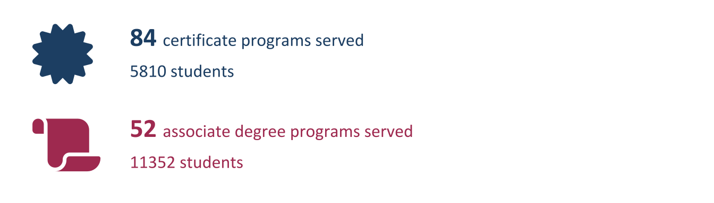
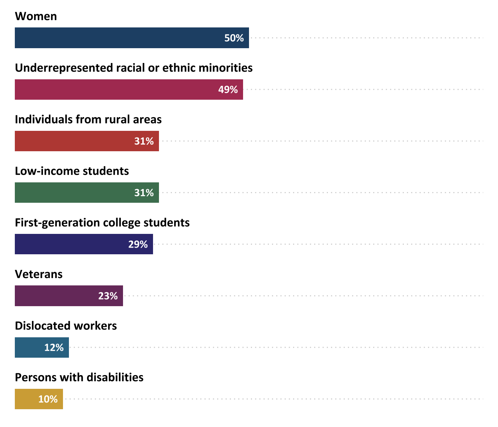
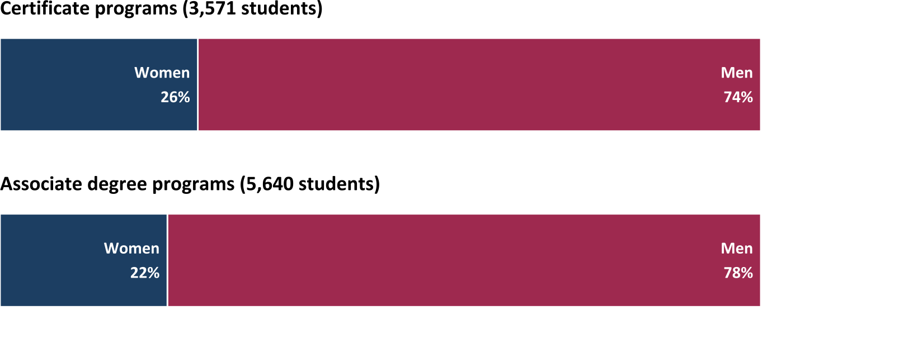
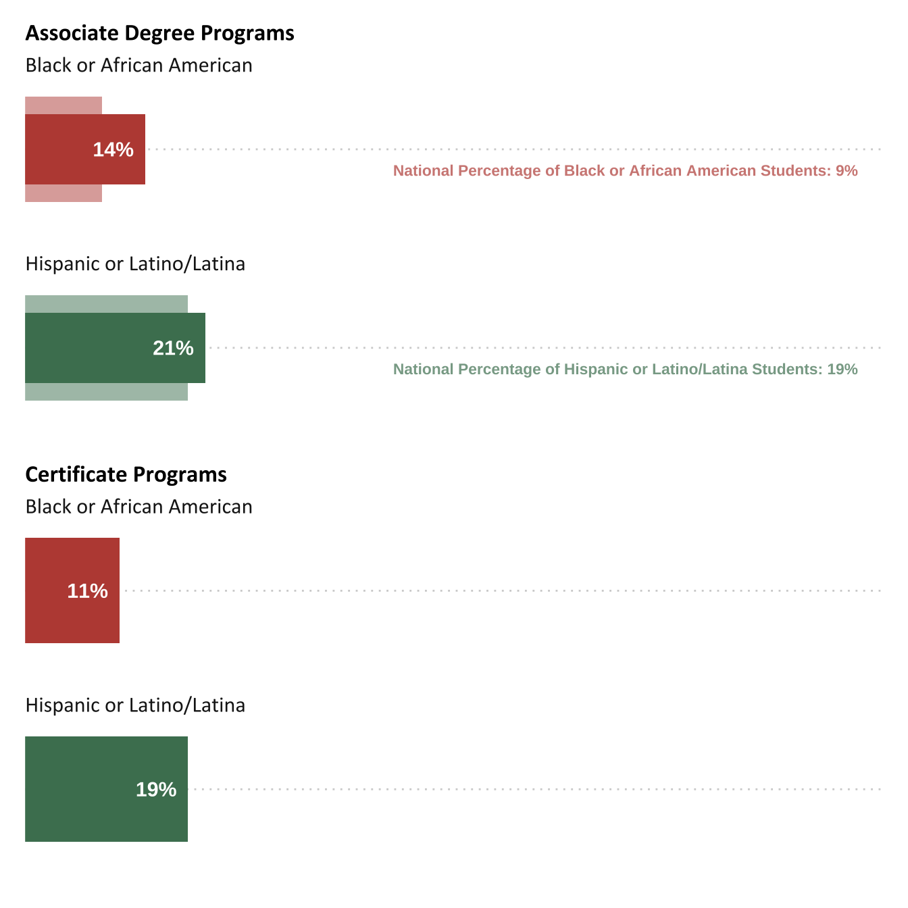
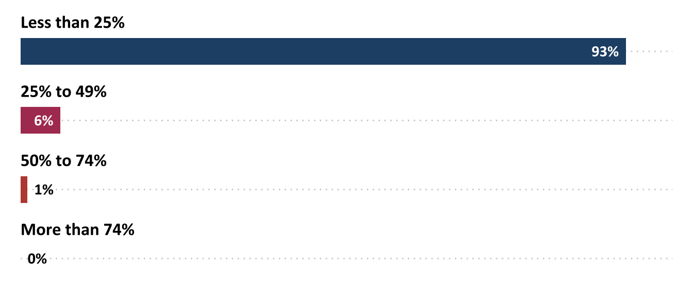
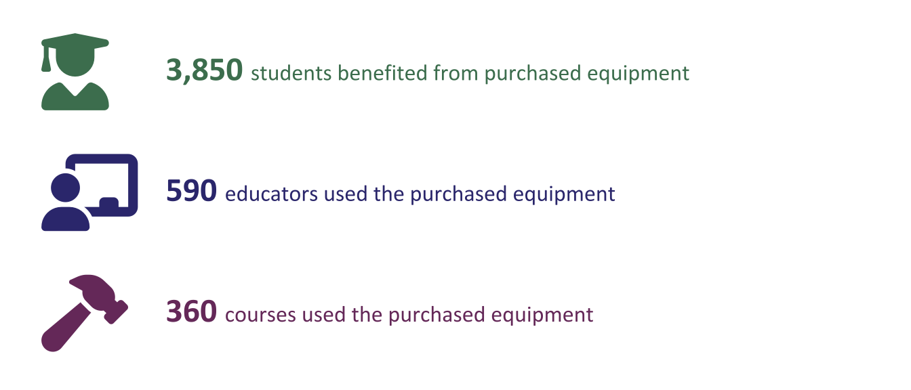
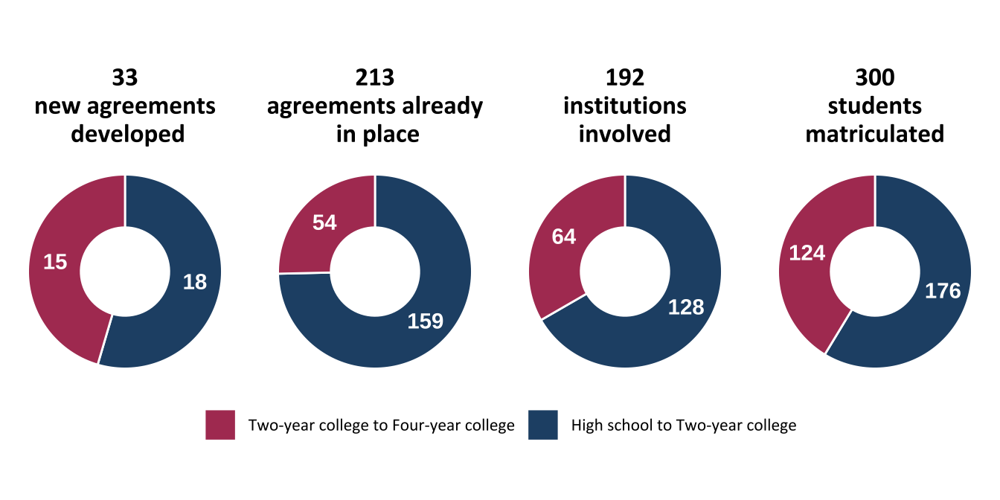

Chapter 2 Academic Programs, Courses, and Pathways
2.0.0.0.1 The ATE program supports the creation and improvement of academic programs that lead to “an appropriate associate degree or specific occupational competency or certification” (National Science Foundation (NSF), 2021, p. 5). Examples of funded activities include creating new degree or certificate programs or courses; modifying the content, instructional strategies, or delivery modes of existing programs and courses; enhancing programs through the acquisition of instruments or equipment for use in instruction; and developing educational pathways (including articulation agreements) that facilitate students’ movement across education levels.
2.1 Academic Program Development
2.1.0.1 Twenty-seven percent of ATE projects created or substantially modified an academic program.
The Committee on Science, Technology, Engineering, and Math Education’s 2018 strategic plan emphasizes expanding the number of students pursuing STEM degrees and improving access to effective STEM programs across educational levels. One of the ways that ATE responds to this call is through the development of new STEM academic programs. ATE PIs were asked to identify the degree or certificate programs that their projects created or improved with ATE funding, and characteristics of students served by those programs.
A total of 146 academic degree programs were developed or substantially modified by 78 ATE projects in 2024. Most of these programs awarded certificates (58%) or associate degrees (36%). Two programs awarded bachelor’s degrees,and 8 programs provided other types of credentials. 18,030 students attended at least one course in these academic programs, with a total of 2161 completing a program in 2024; 920 students completed an associate degree program, while 1100 students completed a certificate program. Programs with students completing certifications or degrees in 2024 graduated an average of 15 students.

The Committee on STEM Education’s 2024 progress report noted the persistence of labor shortages in STEM fields and underscored the importance of increasing diversity, equity, and inclusion in STEM. NSF (2024) has determined that women, persons with disabilities, and three racial and ethnic groups—Blacks, Hispanics, and American Indians or Alaskan Natives—are underrepresented in science and engineering.

Figure 2.1: Percentage of projects that emphasized recruitment of students from specific demographic groups (n=78)
2.2 Students Served by ATE Academic Programs
2.2.0.1 Students from groups that have been historically underrepresented in STEM have similar rates of participation in the ATE program.
Of the 146 academic programs that were developed or modified by ATE projects in 2024, 84 programs (58%) reported data on student gender, and 81 programs (55%) reported data on student race.
2.2.0.1.1 Like other STEM programs, ATE projects still face a challenge in attracting women to the field.

(#fig:fig2a2_corrected)Percentage of women and men in ATE-supported academic programs by degree level
Students who identify as Black / African American or Hispanic / Latino or Latina have slightly higher representation in ATE- supported programs than they do in the general population of students across educational degrees. (See the technical notes for a full explanation of comparison sources for national data.iii)
2.2.0.1.2 The percentage of students who identify as Black / African American and Hispanic / Latino or Latina or Latina in the ATE program mimics national trends.

Figure 2.2: Percentage of students from underrepresented racial and ethnic minority groups in ATE-supported academic programs, compared with national rates
2.3 Course Development
2.3.0.1 Thirty-five percent of ATE projects created or modified at least one academic course.
ATE PIs whose projects engaged in creating or substantially modifying academic courses were asked to identify the number and types of courses they created or modified, the academic levels of these courses, their primary delivery modes, and how many students enrolled in the courses. Some ATE projects engaged in course development as part of a larger initiative to develop or modify an entire degree or certificate program; others did so as a stand-alone effort.
2.3.0.1.1 A total of 376 courses were developed by 104 projects in 2024.
2.4 Instrument Acquisition
2.4.0.1 Thirty-four percent of ATE projects acquired instruments or equipment to prepare students for work in business and industry.
Using state-of-the-art equipment contributes to the development of technical skills students will need for employment. Hands-on experience with such equipment has also been shown to contribute to students’ self-efficacy and positively impact their longer-term career and educational goals (Amelink et al., 2015). The ATE program includes a funding stream to help grantees obtain instruments or equipment that can be used in instruction to prepare students for employment in business and industry.
Ninety-nine ATE projects acquired instrumentation or equipment in 2024. Examples of instruments purchased and utilized by projects might include 3D scanners, computers for adversarial programming, assessment devices, mini drones, virtual reality viewers, and laboratory equipment. Ninety-eight projects reported the amounts they spent on instrumentation or equipment. Projects spent between $500 and $386,170 on instrument acquisition in 2024.
2.4.0.1.1 A majority of projects spent less than 25% of their grant funds on instrumentation in 2024.

Figure 2.3: Percentage of total grant amount spent on instrumentation or equipment in 2020 (n=98)
Projects that use ATE funding to purchase instruments or equipment are expected to revise their academic programming to maximize the value of the items for student learning. In 2024, 3,850 students used instruments and equipment.
2.4.0.1.2 A median of 23 students used the equipment or instrumentation acquired by each ATE project.

Seventy-six projects reported acquiring instrumentation, equipment, or tools to give students hands-on experience with instruments used in the field. Fourteen projects reported acquiring instruments to allow students to perform technical tasks in a simulated environment, and 9 projects noted other reasons, such as fostering collaborative work, students’ applied research experiments, hands-on experience with industry-standard equipment, enabling students with disabilities to perform certain technical tasks, and enhancing virtual instruction.
2.5 Articulation Agreements
2.5.0.1 Eleven percent of ATE projects created or maintained articulation agreements.
Articulation agreements are formal agreements between educational institutions that provide students from secondary schools with pathways and education access to two-year colleges and four-year colleges. These agreements contribute to increasing the number and diversity of scientists, engineers, and technicians (National Academy of Engineering and National Research Council, 2012).
In 1992, Congress saw the importance of these agreements and required their use in NSF’s ATE program. The 2021 ATE solicitation calls for “developing life-long career and educational pathways for technicians to support the changing workplace” (National Science Foundation (NSF), 2021, p. 5).
Thirty-one projects developed or maintained articulation agreements in 2024.
2.5.0.1.1 Most articulation agreements created in 2024 were between high schools and two-year colleges, but more students matriculated between two-year and four-year colleges.

Figure 2.4: Number of articulation agreements, institutions, and students (n=31)